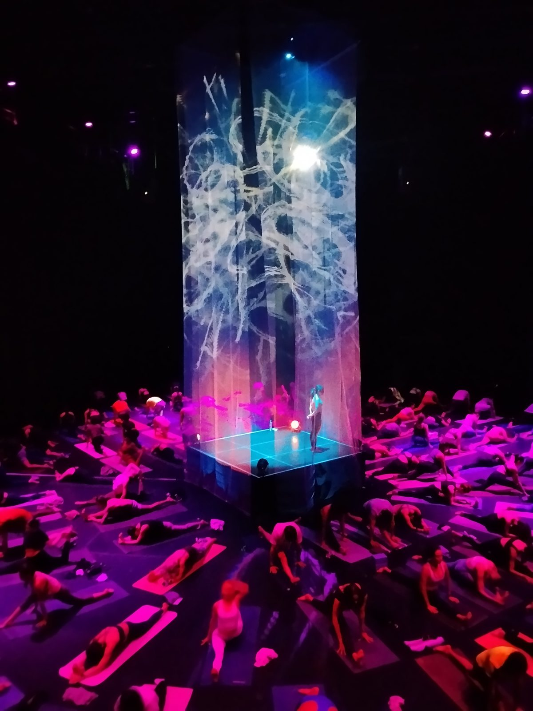
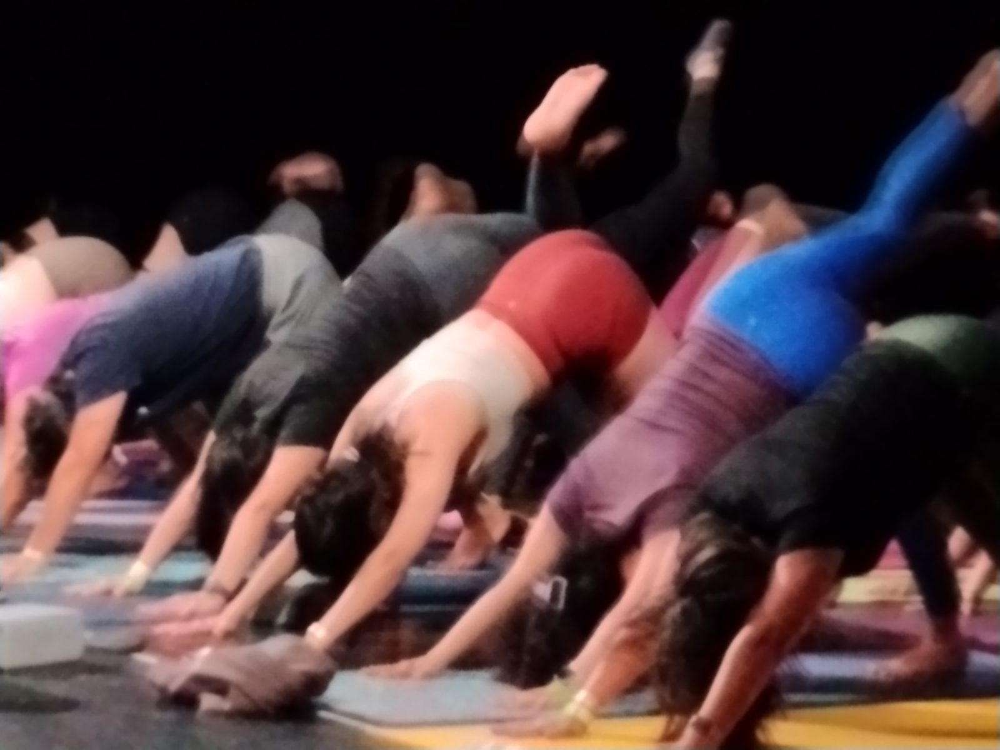
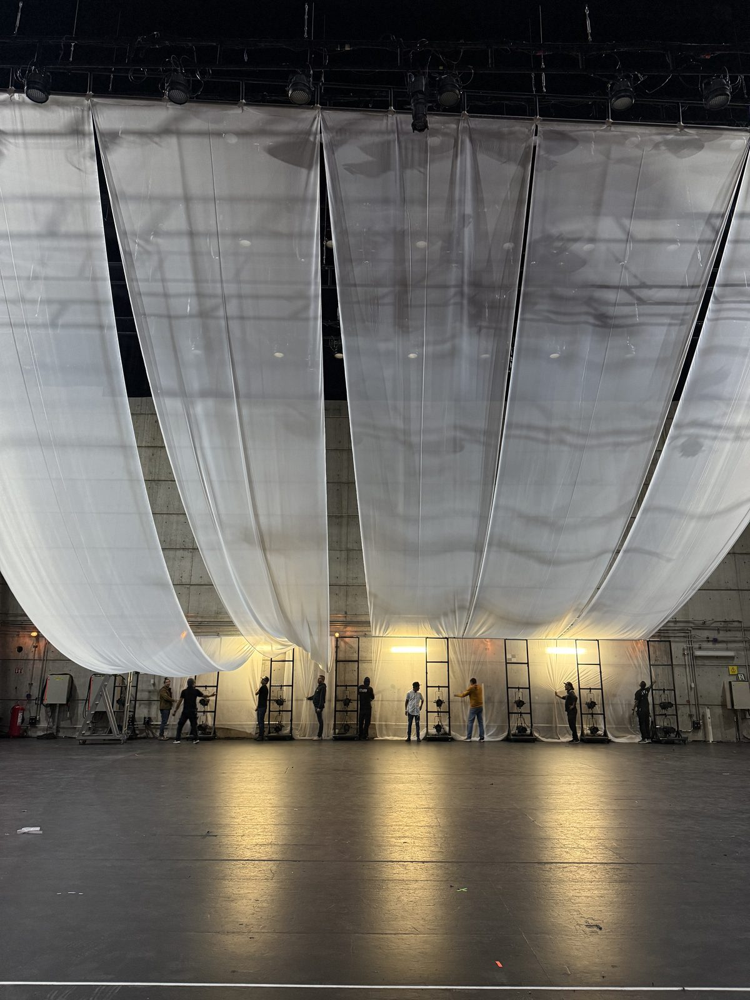
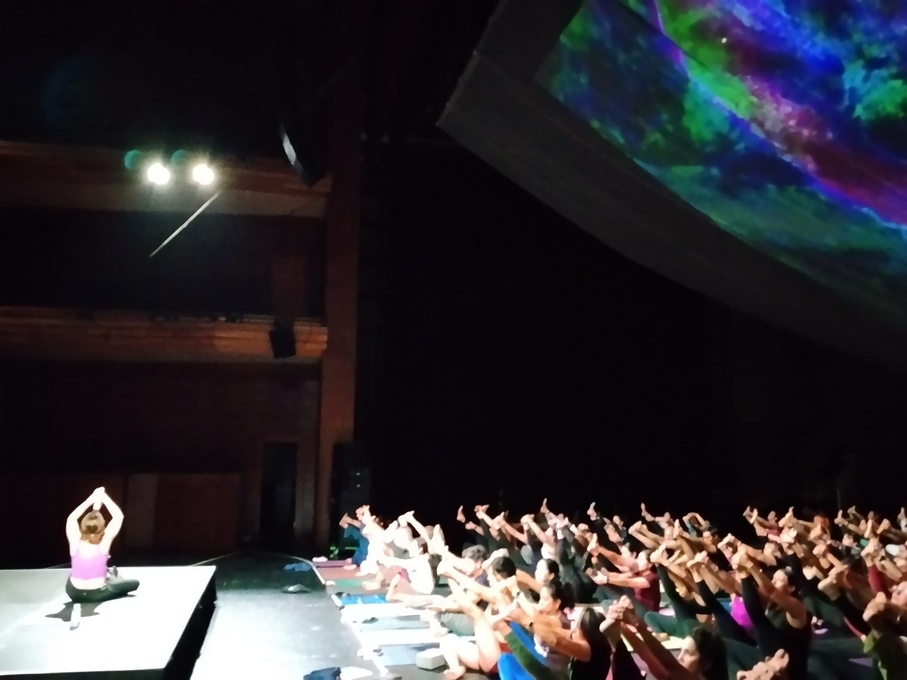
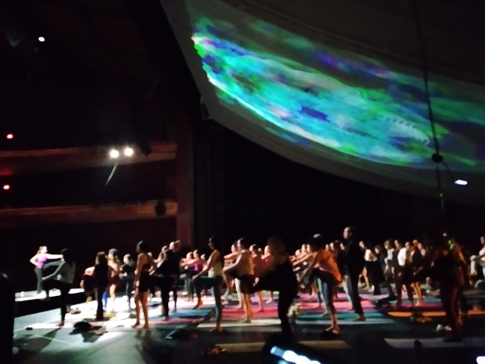
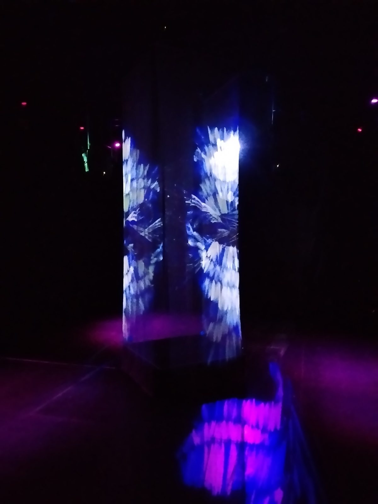
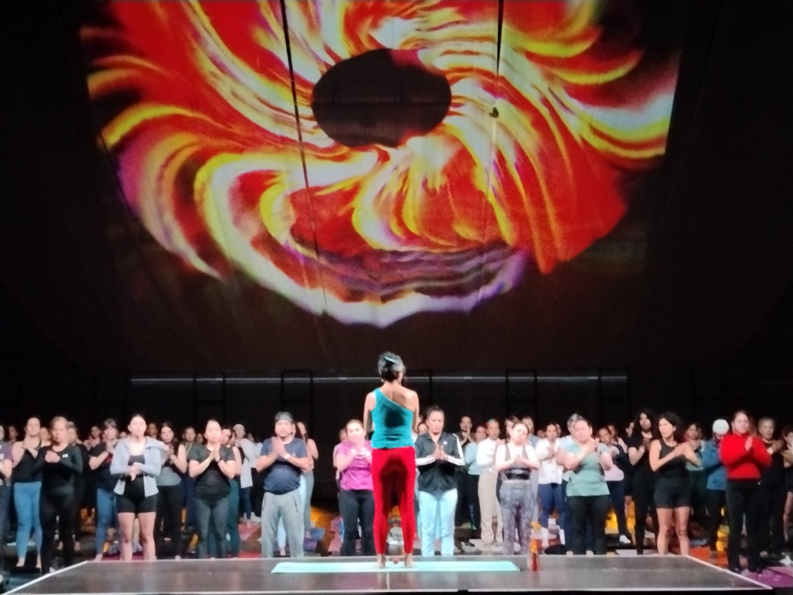
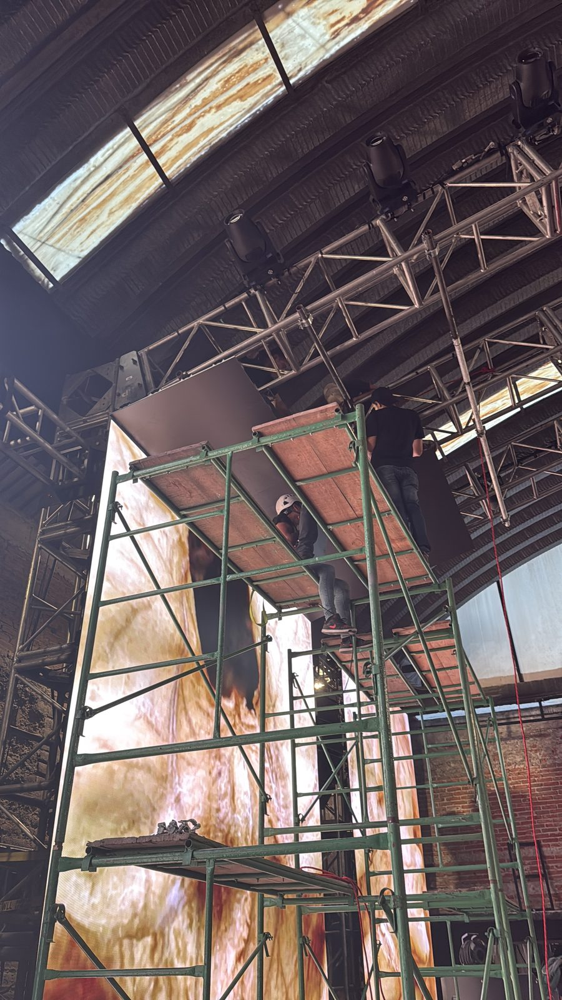
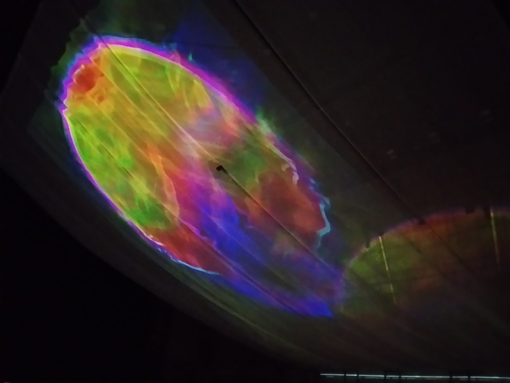
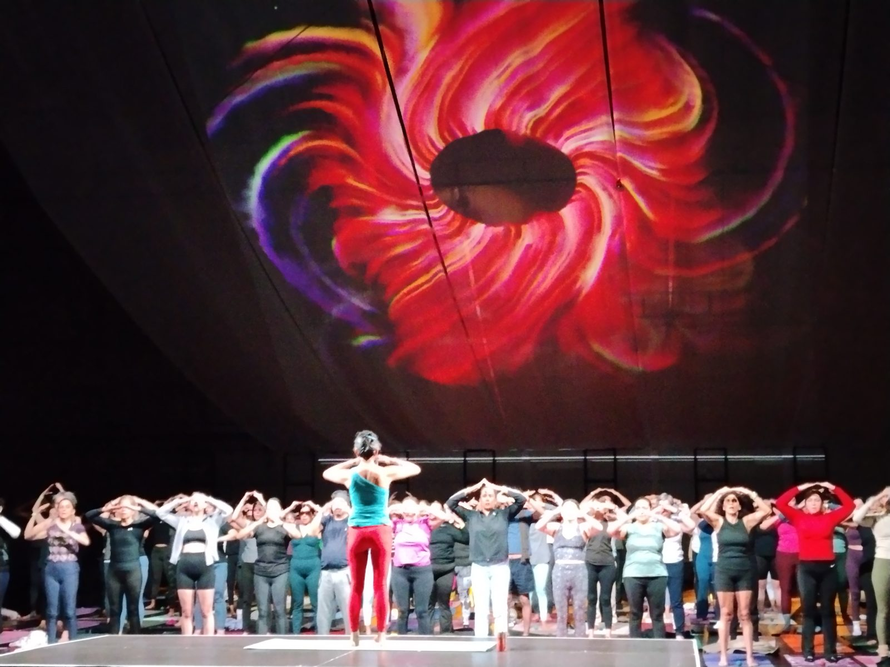

Yoga inmersivo en el Conjunto Santander
Un teatro que respira con la clase.
Para Asana Yoga en Conjunto Santander, ANDATA LAB construyó una columna de luz generativa y un canopy proyectado que se movían con la música, la instructora y cientos de personas en sus tapetes.
Una experiencia inmersiva en el Conjunto Santander.
El reto era convertir el teatro del Conjunto Santander de Artes Escénicas, en Guadalajara, en una experiencia inmersiva de yoga — no una pantalla detrás de la clase, sino una sala que la clase pudiera habitar.
ANDATA LAB construyó una columna de tela proyectada por sus cuatro lados al centro de los tapetes, más un canopy de tela sobre la sala como segunda superficie. Los visuales generativos cambiaban de color y ritmo con cada bloque de la sesión.

Una columna, un cielo.
Dos superficies de proyección: una columna de tela de cuatro caras al centro de la sala, y un canopy que convirtió el techo en cielo.





No es un fondo. Es parte de la práctica.
Dirección visual
Paletas por bloque de clase — calma, energía, cierre. Lenguaje orgánico: agua, fluidos, partículas, flores. La imagen sigue a la instructora, no un loop atrás de ella.
Motor generativo
TouchDesigner en tiempo real, audio-reactivo, nunca dos veces igual. El sistema escucha la música y la sala, no reproduce una línea de tiempo fija.
Mapeo multi-superficie
Cuatro caras de la columna más el canopy, mapeados y mezclados desde Resolume Arena para que ambas superficies sean una sola imagen.
Operación en vivo
Show control durante toda la sesión — cues siguiendo a la instructora y a la música en vivo, del primer aliento al cierre.
De la idea al espacio.




Hecho para vivirse, no solo para postearse.
ANDATA LAB en la sala.
- Estudio
- Andata Lab
- Rol
- Dirección visual · sistemas generativos · videomapping · operación en vivo
- Cliente
- Asana Yoga
- Sede
- Conjunto Santander de Artes Escénicas, Guadalajara
El mismo lenguaje de motor, otras salas.
Experiencias inmersivas para eventos en Guadalajara
Además de yoga inmersivo en el Conjunto Santander, diseñamos videomapping y visuales en tiempo real para eventos en Guadalajara y Zapopan: del recinto al show en vivo.
Yoga inmersivo, videomapping y eventos
¿Pueden hacer una experiencia inmersiva en el Conjunto Santander u otro teatro de Guadalajara?
Sí. Trabajamos en el Conjunto Santander de Artes Escénicas y en otros recintos de Guadalajara y Zapopan: teatros, foros y espacios para eventos. Cuéntanos del recinto y lo revisamos juntos.
¿Qué se necesita para proyectar sobre telas o columnas en un evento?
Una superficie de tela o volumen, proyectores y un motor en tiempo real para mapear y operar la imagen. En este caso usamos una columna de cuatro caras y un canopy. Escríbenos con el espacio y te decimos qué hace falta.
¿Trabajan eventos de yoga, bienestar y congresos?
Sí. Hacemos experiencias inmersivas para yoga, bienestar, congresos, lanzamientos de marca y festivales. El de Asana Yoga en Conjunto Santander es un ejemplo. Platiquemos de tu evento.
¿Operan los visuales en vivo durante el evento?
Sí. Operamos los visuales en vivo durante toda la sesión — cues con la música y quien dirige el escenario. Si tu evento lo necesita, vamos con el equipo. Escríbenos.
¿Planeas un evento de bienestar, festival o experiencia de marca?
Diseñamos espacios inmersivos para yoga, meditación, congresos y shows en vivo — del concepto a la operación en vivo. Cuéntanos de tu espacio.
Inicia un proyecto →